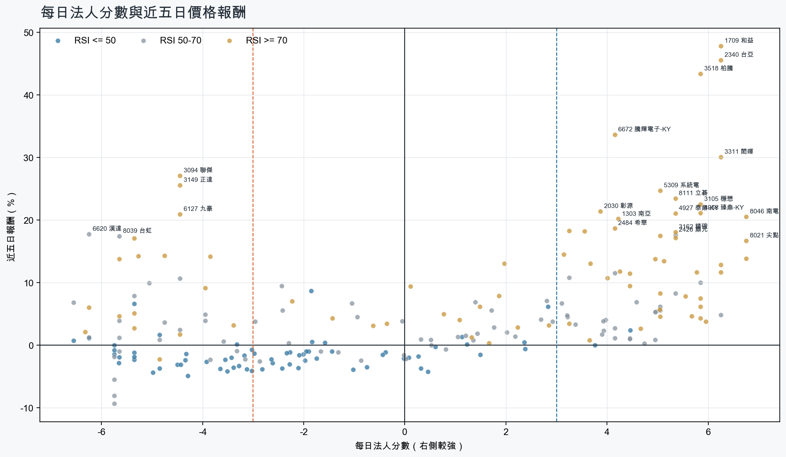
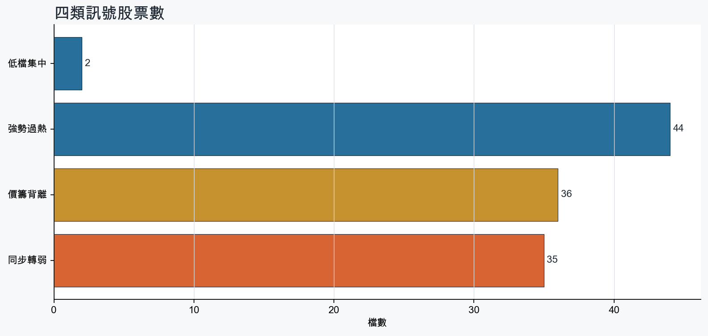
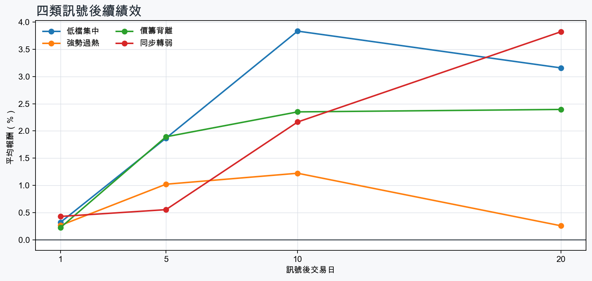

市場情緒偏多
近5日法人合計-457,679 張
篩選池上漲比例67.3%
籌碼好 / RSI低2 檔
籌碼差 / 價跌15 檔



EPS × PE VALUATION
法人常用的相對估值
顯示保守、基準與樂觀估值帶，不把單一數字包裝成精準目標價。
最新累計 EPS 依季數年化 × 同產業有效 P/E 的 Q25／中位數／Q75。排除本公司、非正 P/E，並以 1.5×IQR 排除離群值。估值帶是公開資料篩選值，不是法人目標價；未使用分析師預估 EPS。
MOOD × MONEY
情緒與籌碼雷達
熱度代表被討論程度；情緒分與法人方向分開計算。熱門不等於適合追價，樣本不足也不硬判多空。
| 股票 | 情緒 | 討論熱度 | 情緒 × 籌碼 | 情緒 × 基本面 |
|---|---|---|---|---|
| 2409 友達價籌背離 | 情緒高漲 +67.5信心 100 | 1005 篇 / 256 留言 / 3 則新聞 | 熱門但法人撤退法人分 -3.9 | 基本面與情緒分歧基本面分 -0.8 |
| 8046 南電強勢過熱 | 情緒高漲 +61.0信心 100 | 903 篇 / 142 留言 / 3 則新聞 | 情籌共振法人分 +6.8 | 基本面與情緒共振基本面分 +3.6 |
| 2208 台船同步轉弱 | 情緒高漲 +52.3信心 65 | 851 篇 / 117 留言 / 1 則新聞 | 熱門但法人撤退法人分 -4.3 | 基本面與情緒分歧基本面分 +0.0 |
| 3189 景碩強勢過熱 | 中性分歧 -12.3信心 72 | 731 篇 / 47 留言 / 3 則新聞 | 高熱分歧法人分 +6.8 | 基本面與情緒分歧基本面分 +3.6 |
| 3105 穩懋強勢過熱 | 情緒高漲 +65.3信心 65 | 661 篇 / 28 留言 / 3 則新聞 | 情籌共振法人分 +5.8 | 基本面與情緒共振基本面分 +3.6 |
| 3376 新日興同步轉弱 | 中性分歧 +0.0信心 30 | 400 篇 / 0 留言 / 3 則新聞 | 情籌混合法人分 -5.8 | 基本面與情緒分歧基本面分 -1.8 |
| 2464 盟立同步轉弱 | 偏多 +29.7信心 30 | 400 篇 / 0 留言 / 3 則新聞 | 熱門但法人撤退法人分 -3.9 | 基本面與情緒共振基本面分 +3.0 |
| 2324 仁寶同步轉弱 | 中性分歧 +0.0信心 30 | 400 篇 / 0 留言 / 3 則新聞 | 情籌混合法人分 -5.7 | 基本面與情緒分歧基本面分 +3.0 |
| 2449 京元電子同步轉弱 | 偏多 +29.7信心 30 | 400 篇 / 0 留言 / 3 則新聞 | 熱門但法人撤退法人分 -5.8 | 基本面與情緒共振基本面分 +3.6 |
| 8210 勤誠同步轉弱 | 中性分歧 +0.0信心 30 | 400 篇 / 0 留言 / 3 則新聞 | 情籌混合法人分 -5.8 | 基本面與情緒分歧基本面分 +3.6 |
| 2605 新興同步轉弱 | 中性分歧 +0.0信心 30 | 400 篇 / 0 留言 / 3 則新聞 | 情籌混合法人分 -4.8 | 基本面與情緒分歧基本面分 +3.6 |
| 3094 聯傑價籌背離 | 中性分歧 +0.0信心 30 | 400 篇 / 0 留言 / 3 則新聞 | 情籌混合法人分 -4.5 | 基本面與情緒分歧基本面分 +3.6 |
01
籌碼好 / RSI低
優先研究基本面；法人續買且價格止穩時，才適合分批觀察。
| 股票 / 確認狀態 | 每日法人分 | 浦男式近似 | 法人加速度 | RSI / 相對強弱 | 量價確認 | 融資融券 | 每週集保確認 | 基本面 | EPS × 同業 P/E 估值 | 情緒 / 情籌 | 近期消息 | 論壇討論 |
|---|---|---|---|---|---|---|---|---|---|---|---|---|
| 3034 聯詠等待確認 · 55 分籌碼有訊號，但價格尚未確認 | +3.8法人 +2,905 張 / 4 天 | 接近 · 63中期均線偏多；法人籌碼偏多；買超具延續性；留意未站月線、法人買盤未加速 | -1,370 張近3日 +756 / 連續 +1 日 | 48.1相對大盤 -5.4% | 量比 0.82確認分 -3.6收盤跌破20日線；近20日弱於大盤；法人買盤減速 | -%融資 - 張 / 融券 - 張 | +0.37 pp1000張 -0.72 pp | 單月營收年增 +26.3%；累計營收年增 +4.1%；2026 Q2 累計 EPS 16.59仍需觀察下一期財報延續性來源：公開資訊觀測站 | 基準 NT$ 949.6估值帶 623.1–1,676現價 543.0 · 低於估值帶 · 距基準 +74.9%2026 Q2 累計 EPS 16.59 → 年化 33.18半導體同業 P/E 18.78／28.62／50.51 · n=148 · 信心中等以 Q2 累計 EPS 年化，不等同分析師全年預估來源：TWSE／TPEx 每日本益比 | 樣本不足 +0.0熱度 0 / 信心 0情緒樣本不足 | 近期沒有通過股票語境篩選的新聞 | 近期沒有明確提及本股的論壇樣本 |
| 2388 威盛等待確認 · 51 分籌碼有訊號，但價格尚未確認 | +4.5法人 +2,384 張 / 5 天 | 未命中 · 45法人籌碼偏多；買超具延續性；基本面偏正向；留意未站月線、中期均線未翻多 | -102 張近3日 +547 / 連續 +5 日 | 39.6相對大盤 -12.7% | 量比 0.66確認分 -4.0收盤跌破20日線；20日線低於60日線；近20日弱於大盤；法人買盤減速 | -%融資 - 張 / 融券 - 張 | -0.64 pp1000張 -0.04 pp | 單月營收年增 +77.4%；累計營收年增 +39.6%；2026 Q2 累計 EPS 0.342026 Q2 累計營益率 -15.2%來源：公開資訊觀測站 | 基準 NT$ 19.28估值帶 12.77–34.35現價 71.80 · 高於估值帶 · 距基準 -73.1%2026 Q2 累計 EPS 0.34 → 年化 0.68半導體同業 P/E 18.78／28.36／50.51 · n=148 · 信心較低以 Q2 累計 EPS 年化，不等同分析師全年預估；年化 EPS 為交易所近四季 EPS 的 0.43 倍，需保守解讀來源：TWSE／TPEx 每日本益比 | 樣本不足 +0.0熱度 0 / 信心 0情緒樣本不足 | 近期沒有通過股票語境篩選的新聞 | 近期沒有明確提及本股的論壇樣本 |
02
籌碼好 / RSI高
趨勢強但不追價，等待量縮、RSI降溫或回測支撐。
| 股票 / 確認狀態 | 每日法人分 | 浦男式近似 | 法人加速度 | RSI / 相對強弱 | 量價確認 | 融資融券 | 每週集保確認 | 基本面 | EPS × 同業 P/E 估值 | 情緒 / 情籌 | 近期消息 | 論壇討論 |
|---|---|---|---|---|---|---|---|---|---|---|---|---|
| 8021 尖點等待拉回 · 100 分等拉回，不追價 | +6.8法人 +4,810 張 / 5 天 | 接近 · 90站上月線；中期均線偏多；法人籌碼偏多；留意RSI過熱 | +4,101 張近3日 +4,579 / 連續 +9 日 | 93.3相對大盤 +27.0% | 量比 2.17確認分 +6.5價格、量能與籌碼未見明顯弱項 | -%融資 - 張 / 融券 - 張 | +5.59 pp1000張 +7.37 pp | 單月營收年增 +97.8%；累計營收年增 +76.1%；2026 Q2 累計 EPS 3.25仍需觀察下一期財報延續性來源：公開資訊觀測站 | 基準 NT$ 150.4估值帶 103.1–250.6現價 560.0 · 高於估值帶 · 距基準 -73.1%2026 Q2 累計 EPS 3.25 → 年化 6.50其他電子同業 P/E 15.86／23.14／38.55 · n=69 · 信心中等以 Q2 累計 EPS 年化，不等同分析師全年預估來源：TWSE／TPEx 每日本益比 | 偏多 +29.7熱度 40 / 信心 30情籌共振 | 尖點前8月賺回逾半個股本 EPS達5.14元 現增案明除權交易Yahoo股市 · 10/05尖點8月獲利年增3倍，AI高階PCB升級推升鑽針用量、擴產動能延續news.cnyes.com · 10/05 | 近期沒有明確提及本股的論壇樣本 |
| 3105 穩懋等待拉回 · 100 分等拉回，不追價 | +5.8法人 +31,660 張 / 4 天 | 接近 · 90站上月線；中期均線偏多；法人籌碼偏多；留意RSI過熱 | +3,823 張近3日 +19,266 / 連續 +4 日 | 88.0相對大盤 +29.3% | 量比 1.73確認分 +6.5價格、量能與籌碼未見明顯弱項 | -1.4%融資 -651 張 / 融券 +478 張 | +6.79 pp1000張 +6.93 pp | 單月營收年增 +30.6%；累計營收年增 +33.0%；2026 Q2 累計 EPS 3.56仍需觀察下一期財報延續性來源：公開資訊觀測站 | 基準 NT$ 201.9估值帶 133.7–359.1現價 615.0 · 高於估值帶 · 距基準 -67.2%2026 Q2 累計 EPS 3.56 → 年化 7.12半導體同業 P/E 18.78／28.36／50.44 · n=148 · 信心中等以 Q2 累計 EPS 年化，不等同分析師全年預估來源：TWSE／TPEx 每日本益比 | 情緒高漲 +65.3熱度 66 / 信心 65情籌共振 | 穩懋9月營收月增4.8%TechNews 科技新報 · 10/053105 穩懋- 一起追的飆股- 股市爆料同學會CMoney · 10/05 | [情報] 穩懋 3105 9月營收PTT Stock · 10-05 · 28 留言 |
| 8046 南電等待拉回 · 100 分等拉回，不追價 | +6.8法人 +7,545 張 / 5 天 | 接近 · 90站上月線；中期均線偏多；法人籌碼偏多；留意RSI過熱 | +821 張近3日 +4,945 / 連續 +8 日 | 83.2相對大盤 +30.0% | 量比 1.33確認分 +6.1價格、量能與籌碼未見明顯弱項 | -%融資 - 張 / 融券 - 張 | +1.70 pp1000張 +1.51 pp | 單月營收年增 +40.6%；累計營收年增 +39.6%；2026 Q2 累計 EPS 5.53仍需觀察下一期財報延續性來源：公開資訊觀測站 | 基準 NT$ 299.1估值帶 206.2–517.6現價 1,495 · 高於估值帶 · 距基準 -80.0%2026 Q2 累計 EPS 5.53 → 年化 11.06電子零組件同業 P/E 18.64／27.04／46.80 · n=150 · 信心中等以 Q2 累計 EPS 年化，不等同分析師全年預估來源：TWSE／TPEx 每日本益比 | 情緒高漲 +61.0熱度 90 / 信心 100情籌共振 | 南電、欣興、景碩…ABF三雄噴了！誰毛利上看40％？外資連7買本土法人最高價曝光- 上市櫃旺得富理財網 · 10/05欣興(3037)、南電(8046)、景碩(3189)誰才是 2026～2027年大尺寸、高層數載板，最大受益者？優分析UAnalyze · 10/05 | [情報] 8046 南電 8月自結 1.69 年增:668.18%PTT Stock · 10-02 · 60 留言[新聞] 目標價1575元！欣興、景碩、南電ABF載板PTT Stock · 10-01 · 47 留言 |
| 6278 台表科等待拉回 · 100 分等拉回，不追價 | +6.0法人 +3,382 張 / 5 天 | 命中 · 96站上月線；中期均線偏多；法人籌碼偏多；留意動能位置非最佳 | +416 張近3日 +1,901 / 連續 +6 日 | 77.7相對大盤 +6.5% | 量比 2.18確認分 +5.9價格、量能與籌碼未見明顯弱項 | -%融資 - 張 / 融券 - 張 | +2.77 pp1000張 +3.47 pp | 單月營收年增 +10.9%；累計營收年增 +5.2%；2026 Q2 累計 EPS 4.932026 Q2 累計營益率 6.0%來源：公開資訊觀測站 | 基準 NT$ 252.3估值帶 131.2–376.3現價 220.0 · 估值帶內 · 距基準 +14.7%2026 Q2 累計 EPS 4.93 → 年化 9.86光電同業 P/E 13.31／25.59／38.16 · n=68 · 信心中等以 Q2 累計 EPS 年化，不等同分析師全年預估來源：TWSE／TPEx 每日本益比 | 樣本不足 +0.0熱度 24 / 信心 10情緒樣本不足 | 台表科9月營收月增11.5%TechNews 科技新報 · 10/05 | 近期沒有明確提及本股的論壇樣本 |
| 3189 景碩等待拉回 · 100 分等拉回，不追價 | +6.8法人 +7,216 張 / 5 天 | 接近 · 83站上月線；中期均線偏多；法人籌碼偏多；留意法人買盤未加速、RSI過熱 | -2,071 張近3日 +6,300 / 連續 +8 日 | 85.3相對大盤 +32.9% | 量比 1.59確認分 +2.5法人買盤減速 | -%融資 - 張 / 融券 - 張 | +4.22 pp1000張 +3.47 pp | 單月營收年增 +40.6%；累計營收年增 +32.1%；2026 Q2 累計 EPS 3.74仍需觀察下一期財報延續性來源：公開資訊觀測站 | 基準 NT$ 212.9估值帶 140.5–377.4現價 1,095 · 高於估值帶 · 距基準 -80.6%2026 Q2 累計 EPS 3.74 → 年化 7.48半導體同業 P/E 18.78／28.46／50.45 · n=149 · 信心中等以 Q2 累計 EPS 年化，不等同分析師全年預估來源：TWSE／TPEx 每日本益比 | 中性分歧 -12.3熱度 73 / 信心 72高熱分歧 | 南電、欣興、景碩…ABF三雄噴了！誰毛利上看40％？外資連7買本土法人最高價曝光- 上市櫃旺得富理財網 · 10/05欣興(3037)、南電(8046)、景碩(3189)誰才是 2026～2027年大尺寸、高層數載板，最大受益者？優分析UAnalyze · 10/05 | [新聞] 目標價1575元！欣興、景碩、南電ABF載板PTT Stock · 10-01 · 47 留言 |
| 6672 騰輝電子-KY等待拉回 · 100 分等拉回，不追價 | +4.2法人 +4,245 張 / 3 天 | 接近 · 90站上月線；中期均線偏多；法人籌碼偏多；留意RSI過熱 | +1,748 張近3日 +4,467 / 連續 -1 日 | 88.4相對大盤 +63.1% | 量比 1.65確認分 +6.5價格、量能與籌碼未見明顯弱項 | -%融資 - 張 / 融券 - 張 | +11.53 pp1000張 +8.81 pp | 單月營收年增 +133.2%；累計營收年增 +53.6%；2026 Q2 累計 EPS 4.75仍需觀察下一期財報延續性來源：公開資訊觀測站 | 基準 NT$ 250.3估值帶 176.9–439.7現價 451.0 · 高於估值帶 · 距基準 -44.5%2026 Q2 累計 EPS 4.75 → 年化 9.50電子零組件同業 P/E 18.62／26.35／46.28 · n=149 · 信心中等以 Q2 累計 EPS 年化，不等同分析師全年預估來源：TWSE／TPEx 每日本益比 | 偏多 +29.7熱度 40 / 信心 30情籌共振 | 騰輝電子-KY(6672)受惠 CCL 漲價，股價與獲利同步衝高-朱家泓X林穎CMoney投資網誌 · 10/056672 騰輝電子-KY - 照哥出了？ - 股市爆料同學會CMoney · 10/05 | 近期沒有明確提及本股的論壇樣本 |
| 2376 技嘉等待拉回 · 100 分等拉回，不追價 | +5.8法人 +7,292 張 / 4 天 | 命中 · 91站上月線；中期均線偏多；法人籌碼偏多；留意動能位置非最佳 | +4,589 張近3日 +5,926 / 連續 +3 日 | 77.6相對大盤 +2.4% | 量比 2.04確認分 +5.1價格、量能與籌碼未見明顯弱項 | -%融資 - 張 / 融券 - 張 | +1.90 pp1000張 +1.46 pp | 單月營收年增 +98.4%；累計營收年增 +55.2%；2026 Q2 累計 EPS 17.732026 Q2 累計營益率 6.2%來源：公開資訊觀測站 | 基準 NT$ 614.5估值帶 434.7–844.7現價 388.5 · 低於估值帶 · 距基準 +58.2%2026 Q2 累計 EPS 17.73 → 年化 35.46電腦及週邊同業 P/E 12.26／17.33／23.82 · n=77 · 信心中等以 Q2 累計 EPS 年化，不等同分析師全年預估來源：TWSE／TPEx 每日本益比 | 中性分歧 +0.0熱度 34 / 信心 20情籌混合 | 《電週邊》外資看好下半年+大盤強漲 技嘉嚐試再戰4字頭富聯網 · 10/05外資點火？技嘉大漲逾5%創一個月來新高 分析師揭壓力點位Yahoo股市 · 09/20 | 近期沒有明確提及本股的論壇樣本 |
| 2302 麗正等待拉回 · 100 分等拉回，不追價 | +5.0法人 +2,632 張 / 4 天 | 接近 · 80站上月線；中期均線偏多；法人籌碼偏多；留意量能異常、RSI過熱 | +1,496 張近3日 +1,860 / 連續 -1 日 | 79.2相對大盤 +9.3% | 量比 3.43確認分 +5.3價格、量能與籌碼未見明顯弱項 | -%融資 - 張 / 融券 - 張 | +2.07 pp1000張 +1.69 pp | 單月營收年增 +87.7%；累計營收年增 +38.0%；2026 Q2 累計 EPS 0.60仍需觀察下一期財報延續性來源：公開資訊觀測站 | 基準 NT$ 34.03估值帶 22.54–60.61現價 49.85 · 估值帶內 · 距基準 -31.7%2026 Q2 累計 EPS 0.60 → 年化 1.20半導體同業 P/E 18.78／28.36／50.51 · n=148 · 信心中等以 Q2 累計 EPS 年化，不等同分析師全年預估來源：TWSE／TPEx 每日本益比 | 樣本不足 +0.0熱度 24 / 信心 10情緒樣本不足 | 【11:37 即時新聞】麗正(2302)放量走強逼近漲停，功率半導體族群續成焦點CMoney投資網誌 · 10/05 | 近期沒有明確提及本股的論壇樣本 |
| 4958 臻鼎-KY等待拉回 · 100 分等拉回，不追價 | +5.8法人 +39,421 張 / 4 天 | 命中 · 96站上月線；中期均線偏多；法人籌碼偏多；留意動能位置非最佳 | +17,953 張近3日 +25,920 / 連續 +2 日 | 70.8相對大盤 +15.7% | 量比 1.86確認分 +6.5價格、量能與籌碼未見明顯弱項 | -%融資 - 張 / 融券 - 張 | +0.15 pp1000張 +0.58 pp | 單月營收年增 +41.1%；累計營收年增 +19.9%；2026 Q2 累計 EPS 3.552026 Q2 累計營益率 7.0%來源：公開資訊觀測站 | 基準 NT$ 187.1估值帶 132.2–328.6現價 576.0 · 高於估值帶 · 距基準 -67.5%2026 Q2 累計 EPS 3.55 → 年化 7.10電子零組件同業 P/E 18.62／26.35／46.28 · n=149 · 信心中等以 Q2 累計 EPS 年化，不等同分析師全年預估來源：TWSE／TPEx 每日本益比 | 偏多 +29.7熱度 40 / 信心 30情籌共振 | 【1005台股盤前】台股收盤再創歷史新高！費半連兩日強彈助攻，光通訊領漲台股同步受惠，非農就業公布前夕投信連四買，營收創高模範生鎖定聯亞、光聖、臻鼎-KY｜豐雲學堂2026 年 10 月sinotrade.com.tw · 10/05三大法人買賣超 – 外資買超(4958)臻鼎-KY、(3037)欣興，投信買超(2327)國巨*、(4958)臻鼎-KY，法人合計買超95.57億元sinotrade.com.tw · 10/02 | 近期沒有明確提及本股的論壇樣本 |
| 8150 南茂等待拉回 · 96 分等拉回，不追價 | +4.0法人 +5,391 張 / 3 天 | 接近 · 83站上月線；中期均線偏多；法人籌碼偏多；留意法人買盤未加速、RSI過熱 | -11,695 張近3日 +3,791 / 連續 -1 日 | 79.3相對大盤 +30.8% | 量比 1.98確認分 +2.5法人買盤減速 | -%融資 - 張 / 融券 - 張 | +8.91 pp1000張 +9.72 pp | 單月營收年增 +33.3%；累計營收年增 +30.0%；2026 Q2 累計 EPS 2.00仍需觀察下一期財報延續性來源：公開資訊觀測站 | 基準 NT$ 113.4估值帶 75.12–202.0現價 124.0 · 估值帶內 · 距基準 -8.5%2026 Q2 累計 EPS 2.00 → 年化 4.00半導體同業 P/E 18.78／28.36／50.51 · n=148 · 信心中等以 Q2 累計 EPS 年化，不等同分析師全年預估來源：TWSE／TPEx 每日本益比 | 中性分歧 +0.0熱度 40 / 信心 30情籌混合 | 曾負債225億、董座愁出白髮⋯南茂股價如今1.5年翻近6倍，為何客戶願出2倍價搶產能？Yahoo新聞 · 10/05歐系外資調升南茂目標 SiPh 光學凸塊業務有望貢獻明年營收經濟日報 · 10/03 | 近期沒有明確提及本股的論壇樣本 |
| 6190 萬泰科等待拉回 · 100 分等拉回，不追價 | +6.2法人 +3,872 張 / 5 天 | 接近 · 80站上月線；中期均線偏多；法人籌碼偏多；留意量能異常、RSI過熱 | +1,539 張近3日 +2,799 / 連續 +7 日 | 79.4相對大盤 +6.6% | 量比 4.19確認分 +5.0價格、量能與籌碼未見明顯弱項 | +0.4%融資 +28 張 / 融券 +11 張 | +1.23 pp1000張 -0.16 pp | 單月營收年增 +71.8%；累計營收年增 +29.7%；2026 Q2 累計 EPS 1.352026 Q2 累計營益率 6.5%來源：公開資訊觀測站 | 基準 NT$ 59.72估值帶 39.99–112.0現價 77.40 · 估值帶內 · 距基準 -22.8%2026 Q2 累計 EPS 1.35 → 年化 2.70通信網路同業 P/E 14.81／22.12／41.47 · n=58 · 信心中等以 Q2 累計 EPS 年化，不等同分析師全年預估來源：TWSE／TPEx 每日本益比 | 樣本不足 +0.0熱度 24 / 信心 10情緒樣本不足 | 【10:57 即時新聞】萬泰科(6190)勁揚逾9% 聚焦AI與低軌衛星線材動能CMoney投資網誌 · 10/05 | 近期沒有明確提及本股的論壇樣本 |
| 3162 精確等待拉回 · 100 分等拉回，不追價 | +5.3法人 +4,075 張 / 4 天 | 命中 · 96站上月線；中期均線偏多；法人籌碼偏多；留意動能位置非最佳 | +8 張近3日 +2,053 / 連續 -1 日 | 70.2相對大盤 +13.1% | 量比 1.24確認分 +4.6價格、量能與籌碼未見明顯弱項 | +3.1%融資 +199 張 / 融券 +5 張 | +1.50 pp1000張 +0.57 pp | 單月營收年增 +101.2%；累計營收年增 +33.4%；2026 Q2 累計 EPS 0.052026 Q2 累計營益率 0.6%來源：公開資訊觀測站 | 不適用年化 EPS 與交易所近四季 EPS 差異過大，可能有股本調整或一次性損益 | 樣本不足 +0.0熱度 0 / 信心 0情緒樣本不足 | 近期沒有通過股票語境篩選的新聞 | 近期沒有明確提及本股的論壇樣本 |
| 1709 和益等待拉回 · 100 分等拉回，不追價 | +6.2法人 +18,291 張 / 5 天 | 接近 · 85站上月線；中期均線偏多；法人籌碼偏多；留意量能尚未確認、RSI過熱 | +21,908 張近3日 +10,406 / 連續 +5 日 | 80.2相對大盤 +83.8% | 量比 0.66確認分 +5.8價格、量能與籌碼未見明顯弱項 | -%融資 - 張 / 融券 - 張 | -0.21 pp1000張 +0.20 pp | 單月營收年增 +82.7%；累計營收年增 +22.3%；2026 Q2 累計 EPS 1.30仍需觀察下一期財報延續性來源：公開資訊觀測站 | 基準 NT$ 51.97估值帶 36.14–68.20現價 64.30 · 估值帶內 · 距基準 -19.2%2026 Q2 累計 EPS 1.30 → 年化 2.60化學工業同業 P/E 13.90／19.99／26.23 · n=32 · 信心中等以 Q2 累計 EPS 年化，不等同分析師全年預估來源：TWSE／TPEx 每日本益比 | 中性分歧 +0.0熱度 40 / 信心 30情籌混合 | 1709 和益 - 台廠布局電子樹脂升級 國精化（4722）： 聚焦高階電子... - 股市爆料同學會CMoney · 10/05【10:06 即時新聞】和益(1709)亮燈漲停，化工族群買盤延續CMoney投資網誌 · 10/05 | 近期沒有明確提及本股的論壇樣本 |
| 3293 鈊象等待拉回 · 93 分等拉回，不追價 | +5.8法人 +6,787 張 / 4 天 | 接近 · 68站上月線；法人籌碼偏多；買超具延續性；留意中期均線未翻多、法人買盤未加速 | -984 張近3日 +4,534 / 連續 +1 日 | 81.0相對大盤 +4.5% | 量比 0.72確認分 +0.920日線低於60日線；法人買盤減速 | +1.2%融資 +25 張 / 融券 -8 張 | +3.57 pp1000張 +2.89 pp | 單月營收年增 +24.8%；累計營收年增 +18.1%；2026 Q2 累計 EPS 22.77仍需觀察下一期財報延續性來源：公開資訊觀測站 | 基準 NT$ 643.0估值帶 505.9–1,424現價 794.0 · 估值帶內 · 距基準 -19.0%2026 Q2 累計 EPS 22.77 → 年化 45.54文化創意同業 P/E 11.11／14.12／31.26 · n=14 · 信心中等以 Q2 累計 EPS 年化，不等同分析師全年預估來源：TWSE／TPEx 每日本益比 | 偏多 +29.7熱度 40 / 信心 30情籌共振 | 台股年底拚5萬2！法人搶卡12檔「營收創高股」 系統電、鈊象、全新入列FTNN · 10/05Q4行情走「小碎步」！法人卡位16檔績優股系統電、鈊象、全新入列- 日報工商時報 · 10/05 | 近期沒有明確提及本股的論壇樣本 |
| 5425 台半等待拉回 · 100 分等拉回，不追價 | +6.2法人 +8,776 張 / 5 天 | 接近 · 85站上月線；中期均線偏多；法人籌碼偏多；留意量能尚未確認、RSI過熱 | +5,058 張近3日 +5,955 / 連續 +5 日 | 85.1相對大盤 +7.3% | 量比 2.81確認分 +5.6價格、量能與籌碼未見明顯弱項 | +0.8%融資 +100 張 / 融券 +15 張 | +2.39 pp1000張 +1.19 pp | 單月營收年增 +22.4%；累計營收年增 +7.5%；2026 Q2 累計 EPS 1.52仍需觀察下一期財報延續性來源：公開資訊觀測站 | 基準 NT$ 86.21估值帶 57.09–153.6現價 105.5 · 估值帶內 · 距基準 -18.3%2026 Q2 累計 EPS 1.52 → 年化 3.04半導體同業 P/E 18.78／28.36／50.51 · n=148 · 信心中等以 Q2 累計 EPS 年化，不等同分析師全年預估來源：TWSE／TPEx 每日本益比 | 中性分歧 +0.0熱度 40 / 信心 30情籌混合 | 熱門股／功率元件供需吃緊！台半、富鼎、尼克森強鎖漲停強茂一度亮燈| 產經非凡新聞台 · 10/05【10:23 即時新聞】台半(5425)攻上漲停，主力與法人買盤成盤中焦點CMoney投資網誌 · 10/05 | 近期沒有明確提及本股的論壇樣本 |
03
籌碼差 / 股價上漲
可能是事件行情或軋空；沒有籌碼改善前避免追高。
| 股票 / 確認狀態 | 每日法人分 | 浦男式近似 | 法人加速度 | RSI / 相對強弱 | 量價確認 | 融資融券 | 每週集保確認 | 基本面 | EPS × 同業 P/E 估值 | 情緒 / 情籌 | 近期消息 | 論壇討論 |
|---|---|---|---|---|---|---|---|---|---|---|---|---|
| 3149 正達風險警示 · 64 分背離警戒，避免追高 | -4.5法人 -3,819 張 / 2 天 | 未命中 · 47站上月線；法人買盤加速；明顯強於大盤；留意中期均線未翻多、法人籌碼偏弱 | +1,506 張近3日 -1,032 / 連續 +1 日 | 82.1相對大盤 +25.2% | 量比 1.85確認分 +6.520日線低於60日線 | -%融資 - 張 / 融券 - 張 | -0.02 pp1000張 -0.08 pp | 單月營收年增 +19.3%；累計營收年增 +13.1%2026 Q2 累計 EPS -0.85；2026 Q2 累計營益率 -17.5%來源：公開資訊觀測站 | 不適用年化 EPS 非正數，不適合使用本益比估值 | 樣本不足 +0.0熱度 0 / 信心 0情緒樣本不足 | 近期沒有通過股票語境篩選的新聞 | 近期沒有明確提及本股的論壇樣本 |
| 3094 聯傑風險警示 · 82 分背離警戒，避免追高 | -4.5法人 -3,108 張 / 2 天 | 接近 · 72站上月線；中期均線偏多；法人買盤加速；留意法人籌碼偏弱、買超延續不足 | +1,321 張近3日 -2,333 / 連續 -2 日 | 83.0相對大盤 +54.7% | 量比 1.52確認分 +6.5價格、量能與籌碼未見明顯弱項 | -%融資 - 張 / 融券 - 張 | +13.48 pp1000張 +11.80 pp | 單月營收年增 +30.2%；累計營收年增 +17.1%；2026 Q2 累計 EPS 0.39仍需觀察下一期財報延續性來源：公開資訊觀測站 | 基準 NT$ 22.12估值帶 14.65–39.34現價 69.00 · 高於估值帶 · 距基準 -67.9%2026 Q2 累計 EPS 0.39 → 年化 0.78半導體同業 P/E 18.78／28.36／50.44 · n=148 · 信心中等以 Q2 累計 EPS 年化，不等同分析師全年預估來源：TWSE／TPEx 每日本益比 | 中性分歧 +0.0熱度 40 / 信心 30情籌混合 | 營收：聯傑(3094)9月營收2726萬元，月增率31.70%，年增率88.78%富聯網 · 10/05《半導體》注意股：聯傑 近5日漲29.47%富聯網 · 10/05 | 近期沒有明確提及本股的論壇樣本 |
| 8039 台虹風險警示 · 15 分背離警戒，避免追高 | -5.7法人 -6,991 張 / 1 天 | 未命中 · 45站上月線；中期均線偏多；量價健康；留意法人籌碼偏弱、法人買盤未加速 | -5,366 張近3日 -6,337 / 連續 -3 日 | 62.4相對大盤 -4.8% | 量比 2.24確認分 -0.7近20日弱於大盤；法人買盤減速 | -%融資 - 張 / 融券 - 張 | -5.80 pp1000張 -7.25 pp | 2026 Q2 累計 EPS 1.56單月營收年增 -13.8%；累計營收年增 -0.9%；2026 Q2 累計營益率 6.2%來源：公開資訊觀測站 | 基準 NT$ 82.21估值帶 58.09–144.4現價 303.5 · 高於估值帶 · 距基準 -72.9%2026 Q2 累計 EPS 1.56 → 年化 3.12電子零組件同業 P/E 18.62／26.35／46.28 · n=149 · 信心中等以 Q2 累計 EPS 年化，不等同分析師全年預估來源：TWSE／TPEx 每日本益比 | 偏多 +29.7熱度 40 / 信心 30熱門但法人撤退 | 台虹 115年9月營收8.40億、年減19.01%CMoney · 10/05《業績-電零組》台虹9月營收為8.40億元，年減19.01%富聯網 · 10/05 | 近期沒有明確提及本股的論壇樣本 |
| 6620 漢達風險警示 · 38 分背離警戒，避免追高 | -6.2法人 -2,146 張 / 0 天 | 接近 · 67站上月線；中期均線偏多；明顯強於大盤；留意法人籌碼偏弱、法人買盤未加速 | -706 張近3日 -1,327 / 連續 -5 日 | 62.1相對大盤 +40.6% | 量比 0.92確認分 +2.5法人買盤減速 | +2.9%融資 +349 張 / 融券 -3 張 | +1.50 pp1000張 +0.32 pp | 2026 Q2 累計 EPS 0.65；2026 Q2 累計營益率 25.4%單月營收年增 -79.9%；累計營收年增 -58.2%來源：公開資訊觀測站 | 基準 NT$ 18.71估值帶 15.39–24.04現價 146.0 · 高於估值帶 · 距基準 -87.2%2026 Q2 累計 EPS 0.65 → 年化 1.30生技醫療同業 P/E 11.84／14.39／18.49 · n=84 · 信心較低以 Q2 累計 EPS 年化，不等同分析師全年預估；年化 EPS 為交易所近四季 EPS 的 0.45 倍，需保守解讀來源：TWSE／TPEx 每日本益比 | 偏空 -29.7熱度 40 / 信心 30情籌雙弱 | 《周法人賣超》9/29-10/2排行榜前三名：外資大賣漢達(-2164張)、北極星藥業(-1140張)、康霈*(-1051張)genetinfo.com · 10/036620 漢達- 籌碼結構呈現極為典型的「主力鎖碼、散戶跟進、中階清洗」特徵。 - 股市爆料同學會CMoney · 10/03 | 近期沒有明確提及本股的論壇樣本 |
| 3673 TPK-KY風險警示 · 44 分背離警戒，避免追高 | -5.3法人 -8,632 張 / 1 天 | 未命中 · 57站上月線；中期均線偏多；明顯強於大盤；留意法人籌碼偏弱、法人買盤未加速 | -228 張近3日 -4,311 / 連續 -1 日 | 72.8相對大盤 +10.3% | 量比 3.26確認分 +2.6法人買盤減速 | -%融資 - 張 / 融券 - 張 | -0.53 pp1000張 -1.78 pp | 單月營收年增 +16.1%；累計營收年增 +15.3%；2026 Q2 累計 EPS 3.332026 Q2 累計營益率 -1.4%來源：公開資訊觀測站 | 基準 NT$ 170.4估值帶 88.64–254.2現價 76.80 · 低於估值帶 · 距基準 +121.9%2026 Q2 累計 EPS 3.33 → 年化 6.66光電同業 P/E 13.31／25.59／38.16 · n=68 · 信心中等以 Q2 累計 EPS 年化，不等同分析師全年預估來源：TWSE／TPEx 每日本益比 | 樣本不足 +0.0熱度 24 / 信心 10情緒樣本不足 | 玻璃基板題材升溫！TPK-KY(3673)股價攻上漲停！-CMoney官方CMoney投資網誌 · 10/05 | 近期沒有明確提及本股的論壇樣本 |
| 6127 九豪風險警示 · 49 分背離警戒，避免追高 | -4.5法人 -3,695 張 / 2 天 | 未命中 · 40站上月線；明顯強於大盤；量價健康；留意中期均線未翻多、法人籌碼偏弱 | -6,174 張近3日 -4,910 / 連續 -2 日 | 83.7相對大盤 +15.0% | 量比 2.16確認分 +2.520日線低於60日線；法人買盤減速 | +2.8%融資 +144 張 / 融券 +0 張 | +3.82 pp1000張 +2.91 pp | 單月營收年增 +29.7%；累計營收年增 +5.5%2026 Q2 累計 EPS -1.10；2026 Q2 累計營益率 -23.3%來源：公開資訊觀測站 | 不適用年化 EPS 非正數，不適合使用本益比估值 | 樣本不足 +0.0熱度 0 / 信心 0情緒樣本不足 | 近期沒有通過股票語境篩選的新聞 | 近期沒有明確提及本股的論壇樣本 |
| 4551 智伸科風險警示 · 40 分背離警戒，避免追高 | -5.7法人 -3,645 張 / 1 天 | 未命中 · 51站上月線；明顯強於大盤；基本面有支撐；留意中期均線未翻多、法人籌碼偏弱 | -2,024 張近3日 -2,839 / 連續 -4 日 | 76.4相對大盤 +7.1% | 量比 3.67確認分 +1.120日線低於60日線；法人買盤減速 | -%融資 - 張 / 融券 - 張 | -0.72 pp1000張 -1.34 pp | 單月營收年增 +33.5%；累計營收年增 +21.1%；2026 Q2 累計 EPS 4.77仍需觀察下一期財報延續性來源：公開資訊觀測站 | 基準 NT$ 131.8估值帶 108.4–170.6現價 186.0 · 高於估值帶 · 距基準 -29.2%2026 Q2 累計 EPS 4.77 → 年化 9.54汽車工業同業 P/E 11.36／13.81／17.88 · n=27 · 信心中等以 Q2 累計 EPS 年化，不等同分析師全年預估來源：TWSE／TPEx 每日本益比 | 中性分歧 +0.0熱度 34 / 信心 20情籌混合 | 個股：智伸科(4551)半導體產品能見度達2027年，看好營運「先蹲後跳」富聯網 · 10/05鉅亨速報 - Factset 最新調查：智伸科(4551-TW)EPS預估上修至10.82元，預估目標價為238元TradingView · 10/01 | 近期沒有明確提及本股的論壇樣本 |
| 2020 美亞風險警示 · 40 分背離警戒，避免追高 | -5.3法人 -2,019 張 / 0 天 | 接近 · 63站上月線；中期均線偏多；明顯強於大盤；留意法人籌碼偏弱、法人買盤未加速 | -1,770 張近3日 -1,784 / 連續 -5 日 | 70.6相對大盤 +7.4% | 量比 1.96確認分 +2.4法人買盤減速 | -%融資 - 張 / 融券 - 張 | -0.30 pp1000張 -0.29 pp | 2026 Q2 累計 EPS 1.02；2026 Q2 累計營益率 16.0%單月營收年增 -37.1%；累計營收年增 -21.6%來源：公開資訊觀測站 | 基準 NT$ 26.54估值帶 21.32–32.13現價 25.25 · 估值帶內 · 距基準 +5.1%2026 Q2 累計 EPS 1.02 → 年化 2.04鋼鐵工業同業 P/E 10.45／13.01／15.75 · n=28 · 信心中等以 Q2 累計 EPS 年化，不等同分析師全年預估來源：TWSE／TPEx 每日本益比 | 樣本不足 +0.0熱度 0 / 信心 0情緒樣本不足 | 近期沒有通過股票語境篩選的新聞 | 近期沒有明確提及本股的論壇樣本 |
| 4919 新唐風險警示 · 42 分背離警戒，避免追高 | -4.8法人 -6,299 張 / 2 天 | 未命中 · 40站上月線；明顯強於大盤；量價健康；留意中期均線未翻多、法人籌碼偏弱 | -3,104 張近3日 -5,634 / 連續 -2 日 | 82.1相對大盤 +26.8% | 量比 2.32確認分 +2.520日線低於60日線；法人買盤減速 | -%融資 - 張 / 融券 - 張 | +0.09 pp1000張 +0.14 pp | 單月營收年增 +12.1%；累計營收年增 +1.0%2026 Q2 累計 EPS -0.57；2026 Q2 累計營益率 -2.8%來源：公開資訊觀測站 | 不適用年化 EPS 非正數，不適合使用本益比估值 | 中性分歧 +0.0熱度 40 / 信心 30情籌混合 | 《業績-半導體》新唐9月營收為27.64億元，年增4.66%富聯網 · 10/0510／1台股雷達｜族群輪動國巨＊、新唐、南電股價強勢上攻原因一次看- 證券工商時報 · 10/01 | 近期沒有明確提及本股的論壇樣本 |
| 3450 聯鈞風險警示 · 37 分背離警戒，避免追高 | -6.5法人 -2,567 張 / 0 天 | 接近 · 67站上月線；中期均線偏多；法人買盤加速；留意法人籌碼偏弱、買超延續不足 | +409 張近3日 -1,564 / 連續 -8 日 | 59.4相對大盤 -9.5% | 量比 1.68確認分 +2.5近20日弱於大盤 | -%融資 - 張 / 融券 - 張 | -7.33 pp1000張 -5.80 pp | 單月營收年增 +109.8%；累計營收年增 +29.4%；2026 Q2 累計 EPS 2.78仍需觀察下一期財報延續性來源：公開資訊觀測站 | 基準 NT$ 157.7估值帶 104.4–280.4現價 548.0 · 高於估值帶 · 距基準 -71.2%2026 Q2 累計 EPS 2.78 → 年化 5.56半導體同業 P/E 18.78／28.36／50.44 · n=148 · 信心中等以 Q2 累計 EPS 年化，不等同分析師全年預估來源：TWSE／TPEx 每日本益比 | 樣本不足 +0.0熱度 24 / 信心 10情緒樣本不足 | AI光通訊供應鏈迎轉單！最新美中禁令最快10月啟動，聯鈞等台廠受惠？-財經焦點情報站CMoney投資網誌 · 10/05 | 近期沒有明確提及本股的論壇樣本 |
| 2368 金像電風險警示 · 58 分背離警戒，避免追高 | -5.1法人 -4,523 張 / 1 天 | 接近 · 72站上月線；中期均線偏多；法人買盤加速；留意法人籌碼偏弱、買超延續不足 | +3,538 張近3日 -1,382 / 連續 +1 日 | 68.0相對大盤 +2.0% | 量比 0.85確認分 +4.3價格、量能與籌碼未見明顯弱項 | -%融資 - 張 / 融券 - 張 | -1.36 pp1000張 -1.02 pp | 單月營收年增 +76.4%；累計營收年增 +71.2%；2026 Q2 累計 EPS 16.17仍需觀察下一期財報延續性來源：公開資訊觀測站 | 基準 NT$ 852.2估值帶 602.2–1,519現價 1,215 · 估值帶內 · 距基準 -29.9%2026 Q2 累計 EPS 16.17 → 年化 32.34電子零組件同業 P/E 18.62／26.35／46.98 · n=149 · 信心中等以 Q2 累計 EPS 年化，不等同分析師全年預估來源：TWSE／TPEx 每日本益比 | 偏多 +29.7熱度 40 / 信心 30熱門但法人撤退 | 台光電、台燿雙雄閃燈！金像電也飆漲停 分析師曝：有望挑戰前高Yahoo股市 · 10/05〈焦點股〉金像電將躋身年營收千億元PCB廠 股價深鎖漲停1215元news.cnyes.com · 10/05 | 近期沒有明確提及本股的論壇樣本 |
| 4939 亞電風險警示 · 6 分背離警戒，避免追高 | -5.3法人 -4,216 張 / 1 天 | 未命中 · 41中期均線偏多；基本面有支撐；流動性足夠；留意未站月線、法人籌碼偏弱 | -4,990 張近3日 -4,377 / 連續 -3 日 | 44.2相對大盤 -12.0% | 量比 0.82確認分 -4.2收盤跌破20日線；近20日弱於大盤；法人買盤減速 | +2.5%融資 +156 張 / 融券 -17 張 | -6.88 pp1000張 -6.67 pp | 單月營收年增 +45.4%；累計營收年增 +17.3%；2026 Q2 累計 EPS 0.532026 Q2 累計營益率 7.0%來源：公開資訊觀測站 | 基準 NT$ 27.93估值帶 19.74–49.06現價 78.60 · 高於估值帶 · 距基準 -64.5%2026 Q2 累計 EPS 0.53 → 年化 1.06電子零組件同業 P/E 18.62／26.35／46.28 · n=149 · 信心中等以 Q2 累計 EPS 年化，不等同分析師全年預估來源：TWSE／TPEx 每日本益比 | 樣本不足 +0.0熱度 0 / 信心 0情緒樣本不足 | 近期沒有通過股票語境篩選的新聞 | 近期沒有明確提及本股的論壇樣本 |
| 2409 友達風險警示 · 54 分背離警戒，避免追高 | -3.9法人 -88,202 張 / 3 天 | 接近 · 61站上月線；中期均線偏多；買超具延續性；留意法人籌碼偏弱、法人買盤未加速 | -198,228 張近3日 -182,165 / 連續 -1 日 | 70.4相對大盤 +38.7% | 量比 1.68確認分 +2.5法人買盤減速 | -%融資 - 張 / 融券 - 張 | +7.60 pp1000張 +7.86 pp | 2026 Q2 累計 EPS 0.03單月營收年增 -5.9%；累計營收年增 -1.8%；2026 Q2 累計營益率 -0.3%來源：公開資訊觀測站 | 基準 NT$ 1.52估值帶 0.81–2.28現價 39.05 · 高於估值帶 · 距基準 -96.1%2026 Q2 累計 EPS 0.03 → 年化 0.06光電同業 P/E 13.44／25.38／38.05 · n=69 · 信心較低以 Q2 累計 EPS 年化，不等同分析師全年預估；年化 EPS 為交易所近四季 EPS 的 0.25 倍，需保守解讀來源：TWSE／TPEx 每日本益比 | 情緒高漲 +67.5熱度 100 / 信心 100熱門但法人撤退 | 友達4字頭飆16年新高！這波本夢比在割誰韭菜？「群創上半年賺更多、股價輸在這裡」分析師：看懂3大題材再進場- 上市櫃旺得富理財網 · 10/05友達股價4字頭暴漲8%又下殺翻黑能買？還是群創好？外資押它8萬張！為何無關面板報價，專家揭2底氣今周刊 · 10/05 | [標的] 群創3481 友達2409PTT Stock · 10-02 · 88 留言[新聞] 友達狂飆5.61％！「這群人」聯手狂掃9.1PTT Stock · 10-04 · 80 留言 |
| 5328 華容風險警示 · 24 分背離警戒，避免追高 | -4.5法人 -2,790 張 / 2 天 | 未命中 · 50站上月線；量價健康；基本面有支撐；留意中期均線未翻多、法人籌碼偏弱 | -3,998 張近3日 -3,284 / 連續 -3 日 | 54.7相對大盤 -9.9% | 量比 1.41確認分 -3.620日線低於60日線；近20日弱於大盤；法人買盤減速；融資單日增幅偏高 | +7.6%融資 +521 張 / 融券 +67 張 | +1.41 pp1000張 +0.88 pp | 單月營收年增 +28.3%；累計營收年增 +25.5%；2026 Q2 累計 EPS 0.402026 Q2 累計營益率 2.5%來源：公開資訊觀測站 | 基準 NT$ 21.08估值帶 14.90–37.02現價 58.10 · 高於估值帶 · 距基準 -63.7%2026 Q2 累計 EPS 0.40 → 年化 0.80電子零組件同業 P/E 18.62／26.35／46.28 · n=149 · 信心中等以 Q2 累計 EPS 年化，不等同分析師全年預估來源：TWSE／TPEx 每日本益比 | 樣本不足 +0.0熱度 0 / 信心 0情緒樣本不足 | 近期沒有通過股票語境篩選的新聞 | 近期沒有明確提及本股的論壇樣本 |
| 8121 越峰風險警示 · 58 分背離警戒，避免追高 | -6.2法人 -2,706 張 / 0 天 | 接近 · 59站上月線；法人買盤加速；明顯強於大盤；留意中期均線未翻多、法人籌碼偏弱 | +818 張近3日 -849 / 連續 -5 日 | 74.1相對大盤 +12.6% | 量比 1.98確認分 +6.520日線低於60日線；流動性偏低 | -%融資 +0 張 / 融券 +0 張 | -0.92 pp1000張 -1.03 pp | 單月營收年增 +25.8%；累計營收年增 +22.6%2026 Q2 累計 EPS 0.00；2026 Q2 累計營益率 1.1%來源：公開資訊觀測站 | 不適用年化 EPS 非正數，不適合使用本益比估值 | 樣本不足 +0.0熱度 0 / 信心 0情緒樣本不足 | 近期沒有通過股票語境篩選的新聞 | 近期沒有明確提及本股的論壇樣本 |
04
籌碼差 / 股價下跌
籌碼與價格同弱，原則上迴避，等待法人與大戶同時回補。
| 股票 / 確認狀態 | 每日法人分 | 浦男式近似 | 法人加速度 | RSI / 相對強弱 | 量價確認 | 融資融券 | 每週集保確認 | 基本面 | EPS × 同業 P/E 估值 | 情緒 / 情籌 | 近期消息 | 論壇討論 |
|---|---|---|---|---|---|---|---|---|---|---|---|---|
| 3324 雙鴻風險警示 · 46 分迴避，等待籌碼翻正 | -5.8法人 -3,223 張 / 0 天 | 接近 · 75站上月線；中期均線偏多；明顯強於大盤；留意法人籌碼偏弱、法人買盤未加速 | -321 張近3日 -1,634 / 連續 -5 日 | 61.7相對大盤 +6.4% | 量比 1.26確認分 +2.1法人買盤減速 | +1.8%融資 +130 張 / 融券 -25 張 | +1.00 pp1000張 -2.57 pp | 單月營收年增 +67.2%；累計營收年增 +81.0%；2026 Q2 累計 EPS 23.01仍需觀察下一期財報延續性來源：公開資訊觀測站 | 基準 NT$ 1,065估值帶 729.9–1,801現價 1,550 · 估值帶內 · 距基準 -31.3%2026 Q2 累計 EPS 23.01 → 年化 46.02其他電子同業 P/E 15.86／23.14／39.13 · n=69 · 信心中等以 Q2 累計 EPS 年化，不等同分析師全年預估來源：TWSE／TPEx 每日本益比 | 樣本不足 +0.0熱度 0 / 信心 0情緒樣本不足 | 近期沒有通過股票語境篩選的新聞 | 近期沒有明確提及本股的論壇樣本 |
| 6426 統新風險警示 · 49 分迴避，等待籌碼翻正 | -5.8法人 -2,140 張 / 0 天 | 接近 · 70站上月線；中期均線偏多；明顯強於大盤；留意法人籌碼偏弱、法人買盤未加速 | -1,004 張近3日 -1,519 / 連續 -5 日 | 62.2相對大盤 +26.2% | 量比 0.89確認分 +1.8法人買盤減速 | -%融資 - 張 / 融券 - 張 | +3.91 pp1000張 +2.51 pp | 單月營收年增 +78.2%；累計營收年增 +68.3%；2026 Q2 累計 EPS 2.96仍需觀察下一期財報延續性來源：公開資訊觀測站 | 基準 NT$ 130.9估值帶 87.68–235.6現價 357.5 · 高於估值帶 · 距基準 -63.4%2026 Q2 累計 EPS 2.96 → 年化 5.92通信網路同業 P/E 14.81／22.12／39.79 · n=58 · 信心中等以 Q2 累計 EPS 年化，不等同分析師全年預估來源：TWSE／TPEx 每日本益比 | 樣本不足 +0.0熱度 0 / 信心 0情緒樣本不足 | 近期沒有通過股票語境篩選的新聞 | 近期沒有明確提及本股的論壇樣本 |
| 3376 新日興風險警示 · 0 分迴避，等待籌碼翻正 | -5.8法人 -2,023 張 / 0 天 | 未命中 · 11流動性足夠；留意未站月線、中期均線未翻多 | -103 張近3日 -1,298 / 連續 -10 日 | 35.1相對大盤 -24.3% | 量比 0.57確認分 -5.0收盤跌破20日線；20日線低於60日線；近20日弱於大盤；成交量不足；法人買盤減速 | -%融資 - 張 / 融券 - 張 | -7.10 pp1000張 -6.57 pp | 2026 Q2 累計 EPS 0.47單月營收年增 -10.0%；累計營收年增 -12.5%；2026 Q2 累計營益率 -1.8%來源：公開資訊觀測站 | 基準 NT$ 25.42估值帶 17.52–43.99現價 171.5 · 高於估值帶 · 距基準 -85.2%2026 Q2 累計 EPS 0.47 → 年化 0.94電子零組件同業 P/E 18.64／27.04／46.80 · n=150 · 信心中等以 Q2 累計 EPS 年化，不等同分析師全年預估來源：TWSE／TPEx 每日本益比 | 中性分歧 +0.0熱度 40 / 信心 30情籌混合 | 3376 新日興 - 外資好狠 連18賣 今天應該是連19 - 股市爆料同學會CMoney · 10/053376 新日興 - 爛到不行！趕羚羊草枝擺！ - 股市爆料同學會CMoney · 10/05 | 近期沒有明確提及本股的論壇樣本 |
| 0055 元大MSCI金融風險警示 · 4 分迴避，等待籌碼翻正 | -5.3法人 -2,679 張 / 1 天 | 未命中 · 42中期均線偏多；量價健康；動能強但未過熱；留意未站月線、法人籌碼偏弱 | -1,626 張近3日 -2,355 / 連續 -3 日 | 47.0相對大盤 -6.8% | 量比 1.04確認分 -3.2收盤跌破20日線；近20日弱於大盤；法人買盤減速 | -%融資 - 張 / 融券 - 張 | -5.92 pp1000張 -4.76 pp | 尚無明確成長訊號仍需觀察下一期財報延續性來源：公開資訊觀測站 | 不適用最新財報缺少可年化 EPS | 樣本不足 +0.0熱度 0 / 信心 0情緒樣本不足 | 近期沒有通過股票語境篩選的新聞 | 近期沒有明確提及本股的論壇樣本 |
| 3264 欣銓風險警示 · 24 分迴避，等待籌碼翻正 | -5.8法人 -25,231 張 / 0 天 | 未命中 · 54中期均線偏多；量價健康；基本面有支撐；留意未站月線、法人籌碼偏弱 | -7,762 張近3日 -15,019 / 連續 -5 日 | 54.5相對大盤 -1.6% | 量比 1.39確認分 -1.3收盤跌破20日線；法人買盤減速 | -3.5%融資 -404 張 / 融券 -5 張 | -3.57 pp1000張 -3.16 pp | 單月營收年增 +46.6%；累計營收年增 +33.9%；2026 Q2 累計 EPS 4.39仍需觀察下一期財報延續性來源：公開資訊觀測站 | 基準 NT$ 249.0估值帶 164.9–443.5現價 241.5 · 估值帶內 · 距基準 +3.1%2026 Q2 累計 EPS 4.39 → 年化 8.78半導體同業 P/E 18.78／28.36／50.51 · n=148 · 信心中等以 Q2 累計 EPS 年化，不等同分析師全年預估來源：TWSE／TPEx 每日本益比 | 中性分歧 +0.0熱度 34 / 信心 20情籌混合 | 衝刺5萬點只剩最後4％！欣銓、廣達被主力盯上了？「拉積盤變身超級吞金獸」法說會前夕3大族群突被買爆- 上市櫃旺得富理財網 · 10/053264 欣銓 - 欣銓09/17收盤244.5 融資6217張，近期也約在這個... - 股市爆料同學會CMoney · 10/04 | 近期沒有明確提及本股的論壇樣本 |
| 2464 盟立風險警示 · 16 分迴避，等待籌碼翻正 | -3.9法人 -2,820 張 / 3 天 | 未命中 · 55中期均線偏多；買超具延續性；量價健康；留意未站月線、法人籌碼偏弱 | -3,445 張近3日 -4,158 / 連續 -2 日 | 51.9相對大盤 -22.4% | 量比 1.61確認分 -3.5收盤跌破20日線；近20日弱於大盤；法人買盤減速 | -%融資 - 張 / 融券 - 張 | -8.33 pp1000張 -9.84 pp | 單月營收年增 +73.7%；累計營收年增 +31.4%；2026 Q2 累計 EPS 0.662026 Q2 累計營益率 4.4%來源：公開資訊觀測站 | 基準 NT$ 30.54估值帶 20.94–50.89現價 191.0 · 高於估值帶 · 距基準 -84.0%2026 Q2 累計 EPS 0.66 → 年化 1.32其他電子同業 P/E 15.86／23.14／38.55 · n=69 · 信心較低以 Q2 累計 EPS 年化，不等同分析師全年預估；年化 EPS 為交易所近四季 EPS 的 3.47 倍，需保守解讀來源：TWSE／TPEx 每日本益比 | 偏多 +29.7熱度 40 / 信心 30熱門但法人撤退 | 盟立諧波減速器接單增溫，明年產能大幅提升台視全球資訊網 · 10/05馬斯克預言20年1,000億台人形機器人！盟立（2464）、上銀（2049）、亞光（3019）等6檔台廠與8月營收一次看｜股市話題sinotrade.com.tw · 10/02 | 近期沒有明確提及本股的論壇樣本 |
| 2324 仁寶風險警示 · 5 分迴避，等待籌碼翻正 | -5.7法人 -74,361 張 / 1 天 | 未命中 · 30量價健康；基本面有支撐；流動性足夠；留意未站月線、中期均線未翻多 | -46,124 張近3日 -63,320 / 連續 -3 日 | 32.8相對大盤 -16.0% | 量比 0.96確認分 -5.0收盤跌破20日線；20日線低於60日線；近20日弱於大盤；法人買盤減速 | -%融資 - 張 / 融券 - 張 | -2.45 pp1000張 -2.39 pp | 單月營收年增 +14.5%；累計營收年增 +18.3%；2026 Q2 累計 EPS 1.182026 Q2 累計營益率 1.3%來源：公開資訊觀測站 | 基準 NT$ 39.93估值帶 28.93–56.22現價 35.80 · 估值帶內 · 距基準 +11.5%2026 Q2 累計 EPS 1.18 → 年化 2.36電腦及週邊同業 P/E 12.26／16.92／23.82 · n=77 · 信心中等以 Q2 累計 EPS 年化，不等同分析師全年預估來源：TWSE／TPEx 每日本益比 | 中性分歧 +0.0熱度 40 / 信心 30情籌混合 | B300需求旺到年底！仁寶2027年伺服器營收占比拚4成 外資卻狂倒15萬張、提款56.5億元Yahoo股市 · 10/042324 仁寶 - 理智一點可以嗎 40以上就是太貴 不比價多吃虧 - 股市爆料同學會CMoney · 10/05 | 近期沒有明確提及本股的論壇樣本 |
| 5534 長虹風險警示 · 4 分迴避，等待籌碼翻正 | -5.7法人 -3,086 張 / 0 天 | 未命中 · 26基本面有支撐；流動性足夠；留意未站月線、中期均線未翻多 | -1,955 張近3日 -2,581 / 連續 -9 日 | 38.5相對大盤 -14.7% | 量比 3.30確認分 -6.2收盤跌破20日線；20日線低於60日線；近20日弱於大盤；法人買盤減速 | -%融資 - 張 / 融券 - 張 | -1.03 pp1000張 -0.61 pp | 單月營收年增 +88.6%；累計營收年增 +67.1%；2026 Q2 累計 EPS 1.05仍需觀察下一期財報延續性來源：公開資訊觀測站 | 基準 NT$ 19.80估值帶 14.34–26.98現價 71.80 · 高於估值帶 · 距基準 -72.4%2026 Q2 累計 EPS 1.05 → 年化 2.10建材營造同業 P/E 6.83／9.43／12.85 · n=62 · 信心較低以 Q2 累計 EPS 年化，不等同分析師全年預估；年化 EPS 為交易所近四季 EPS 的 0.37 倍，需保守解讀來源：TWSE／TPEx 每日本益比 | 樣本不足 +0.0熱度 0 / 信心 0情緒樣本不足 | 近期沒有通過股票語境篩選的新聞 | 近期沒有明確提及本股的論壇樣本 |
| 2449 京元電子風險警示 · 65 分迴避，等待籌碼翻正 | -5.8法人 -27,616 張 / 0 天 | 接近 · 77站上月線；中期均線偏多；法人買盤加速；留意法人籌碼偏弱、買超延續不足 | +4,951 張近3日 -10,964 / 連續 -5 日 | 64.6相對大盤 +4.2% | 量比 0.78確認分 +4.8價格、量能與籌碼未見明顯弱項 | -%融資 - 張 / 融券 - 張 | +2.70 pp1000張 +2.12 pp | 單月營收年增 +31.6%；累計營收年增 +35.5%；2026 Q2 累計 EPS 3.91仍需觀察下一期財報延續性來源：公開資訊觀測站 | 基準 NT$ 221.8估值帶 146.9–395.0現價 294.0 · 估值帶內 · 距基準 -24.6%2026 Q2 累計 EPS 3.91 → 年化 7.82半導體同業 P/E 18.78／28.36／50.51 · n=148 · 信心中等以 Q2 累計 EPS 年化，不等同分析師全年預估來源：TWSE／TPEx 每日本益比 | 偏多 +29.7熱度 40 / 信心 30熱門但法人撤退 | 京元電子到處砸錢，還要赴美設廠，到底看到多少AI訂單？理財周刊 · 09/242449 京元電子 - 京元電 去年第一季就賺3.5元股價還在大約80元，第2季才賺... - 股市爆料同學會CMoney · 10/05 | 近期沒有明確提及本股的論壇樣本 |
| 5388 中磊風險警示 · 24 分迴避，等待籌碼翻正 | -5.3法人 -3,610 張 / 1 天 | 未命中 · 42法人買盤加速；基本面有支撐；動能強但未過熱；留意未站月線、中期均線未翻多 | +1,315 張近3日 -1,205 / 連續 -1 日 | 50.0相對大盤 -12.9% | 量比 0.80確認分 -1.8收盤跌破20日線；20日線低於60日線；近20日弱於大盤 | -%融資 - 張 / 融券 - 張 | -1.98 pp1000張 -1.34 pp | 單月營收年增 +45.1%；累計營收年增 +55.2%；2026 Q2 累計 EPS 2.592026 Q2 累計營益率 3.1%來源：公開資訊觀測站 | 基準 NT$ 117.7估值帶 76.72–214.8現價 71.70 · 低於估值帶 · 距基準 +64.2%2026 Q2 累計 EPS 2.59 → 年化 5.18通信網路同業 P/E 14.81／22.73／41.47 · n=58 · 信心中等以 Q2 累計 EPS 年化，不等同分析師全年預估來源：TWSE／TPEx 每日本益比 | 樣本不足 +0.0熱度 24 / 信心 10情緒樣本不足 | 5388 中磊- 中磊攻次世代超高速光纖- 股市爆料同學會CMoney · 10/03 | 近期沒有明確提及本股的論壇樣本 |
| 2537 聯上發風險警示 · 7 分迴避，等待籌碼翻正 | -5.0法人 -2,053 張 / 0 天 | 未命中 · 26中期均線偏多；基本面偏正向；留意未站月線、法人籌碼偏弱 | -1,708 張近3日 -1,885 / 連續 -6 日 | 33.3相對大盤 -14.8% | 量比 2.91確認分 -5.8收盤跌破20日線；近20日弱於大盤；法人買盤減速；流動性偏低 | -%融資 - 張 / 融券 - 張 | +0.75 pp1000張 -0.72 pp | 累計營收年增 +204.8%；2026 Q2 累計 EPS 0.41；2026 Q2 累計營益率 14.6%單月營收年增 -15.0%來源：公開資訊觀測站 | 基準 NT$ 7.65估值帶 5.53–10.35現價 10.90 · 高於估值帶 · 距基準 -29.8%2026 Q2 累計 EPS 0.41 → 年化 0.82建材營造同業 P/E 6.75／9.33／12.62 · n=61 · 信心較低以 Q2 累計 EPS 年化，不等同分析師全年預估；年化 EPS 為交易所近四季 EPS 的 2.05 倍，需保守解讀來源：TWSE／TPEx 每日本益比 | 樣本不足 +0.0熱度 0 / 信心 0情緒樣本不足 | 近期沒有通過股票語境篩選的新聞 | 近期沒有明確提及本股的論壇樣本 |
| 8210 勤誠風險警示 · 20 分迴避，等待籌碼翻正 | -5.8法人 -4,411 張 / 0 天 | 未命中 · 37法人買盤加速；基本面有支撐；動能強但未過熱；留意未站月線、中期均線未翻多 | +1,926 張近3日 -1,304 / 連續 -7 日 | 47.4相對大盤 -14.5% | 量比 3.42確認分 -2.1收盤跌破20日線；20日線低於60日線；近20日弱於大盤 | -%融資 - 張 / 融券 - 張 | -3.26 pp1000張 -2.66 pp | 單月營收年增 +40.5%；累計營收年增 +51.7%；2026 Q2 累計 EPS 21.83仍需觀察下一期財報延續性來源：公開資訊觀測站 | 基準 NT$ 738.7估值帶 535.3–1,040現價 890.0 · 估值帶內 · 距基準 -17.0%2026 Q2 累計 EPS 21.83 → 年化 43.66電腦及週邊同業 P/E 12.26／16.92／23.82 · n=77 · 信心中等以 Q2 累計 EPS 年化，不等同分析師全年預估來源：TWSE／TPEx 每日本益比 | 中性分歧 +0.0熱度 40 / 信心 30情籌混合 | 【13:24 即時新聞】勤誠(8210)股價走強，AI伺服器訂單動能受關注CMoney投資網誌 · 10/05《投信賣超5-3》上海銀(428)、勤誠(324)、裕融(315)富聯網 · 10/05 | 近期沒有明確提及本股的論壇樣本 |
| 2208 台船風險警示 · 5 分迴避，等待籌碼翻正 | -4.3法人 -6,510 張 / 0 天 | 未命中 · 23流動性足夠；留意未站月線、中期均線未翻多 | -4,341 張近3日 -5,659 / 連續 -6 日 | 36.7相對大盤 -10.5% | 量比 2.61確認分 -5.8收盤跌破20日線；20日線低於60日線；近20日弱於大盤；法人買盤減速 | -%融資 - 張 / 融券 - 張 | +0.30 pp1000張 -0.01 pp | 單月營收年增 +55.6%；2026 Q2 累計 EPS 0.28累計營收年增 -19.8%；2026 Q2 累計營益率 -9.5%來源：公開資訊觀測站 | 基準 NT$ 5.95估值帶 4.94–7.40現價 18.45 · 高於估值帶 · 距基準 -67.8%2026 Q2 累計 EPS 0.28 → 年化 0.56航運業同業 P/E 8.82／10.62／13.22 · n=25 · 信心中等以 Q2 累計 EPS 年化，不等同分析師全年預估來源：TWSE／TPEx 每日本益比 | 情緒高漲 +52.3熱度 85 / 信心 65熱門但法人撤退 | 2208 台船- 台船承造海巡新型遠洋巡護船可自主航行30天以上- 股市爆料同學會CMoney · 10/02 | [新聞] 海鯤潛艦已罰台船近6000萬拚10月交艦？PTT Stock · 10-01 · 117 留言 |
| 2605 新興風險警示 · 35 分迴避，等待籌碼翻正 | -4.8法人 -10,681 張 / 1 天 | 未命中 · 43中期均線偏多；法人買盤加速；基本面有支撐；留意未站月線、法人籌碼偏弱 | +5,123 張近3日 -3,908 / 連續 -1 日 | 42.5相對大盤 -9.4% | 量比 0.56確認分 -0.8收盤跌破20日線；近20日弱於大盤；成交量不足 | -%融資 - 張 / 融券 - 張 | -0.13 pp1000張 -0.71 pp | 單月營收年增 +58.8%；累計營收年增 +38.7%；2026 Q2 累計 EPS 3.67仍需觀察下一期財報延續性來源：公開資訊觀測站 | 基準 NT$ 80.08估值帶 67.67–105.7現價 35.15 · 低於估值帶 · 距基準 +127.8%2026 Q2 累計 EPS 3.67 → 年化 7.34航運業同業 P/E 9.22／10.91／14.40 · n=26 · 信心中等以 Q2 累計 EPS 年化，不等同分析師全年預估來源：TWSE／TPEx 每日本益比 | 中性分歧 +0.0熱度 40 / 信心 30情籌混合 | 2605 新興 - 我喜歡垃圾股，只要公司賺錢，配息率高！難得低價買好股！ - 股市爆料同學會CMoney · 10/05精工獎台中頒獎 產發署助打入新興產業供應鏈|政經臺灣僑新聞 · 10/03 | 近期沒有明確提及本股的論壇樣本 |
| 9941 裕融風險警示 · 14 分迴避，等待籌碼翻正 | -3.5法人 -2,588 張 / 0 天 | 未命中 · 26量價健康；基本面偏正向；流動性足夠；留意未站月線、中期均線未翻多 | -943 張近3日 -1,893 / 連續 -8 日 | 21.8相對大盤 -14.6% | 量比 2.00確認分 -5.0收盤跌破20日線；20日線低於60日線；近20日弱於大盤；法人買盤減速 | -%融資 - 張 / 融券 - 張 | -0.30 pp1000張 -0.78 pp | 單月營收年增 +1.9%；2026 Q2 累計 EPS 3.86；2026 Q2 累計營益率 14.8%累計營收年增 -1.3%來源：公開資訊觀測站 | 基準 NT$ 109.4估值帶 78.13–181.0現價 75.90 · 低於估值帶 · 距基準 +44.1%2026 Q2 累計 EPS 3.86 → 年化 7.72其他同業 P/E 10.12／14.17／23.45 · n=70 · 信心中等以 Q2 累計 EPS 年化，不等同分析師全年預估來源：TWSE／TPEx 每日本益比 | 樣本不足 -9.9熱度 24 / 信心 10情緒樣本不足 | 《投信賣超5-3》上海銀(428)、勤誠(324)、裕融(315)富聯網 · 10/05 | 近期沒有明確提及本股的論壇樣本 |
BACKTEST
長期規律追蹤
每次訊號後自動補算1、5、10、20個交易日報酬；樣本不足時不做結論。

| 訊號組別 | 1日 | 5日 | 10日 | 20日 |
|---|---|---|---|---|
| 低檔集中 | +0.32%勝率 50% / n=195 | +1.87%勝率 55% / n=178 | +3.84%勝率 54% / n=146 | +3.16%勝率 47% / n=60 |
| 強勢過熱 | +0.26%勝率 48% / n=641 | +1.02%勝率 51% / n=508 | +1.22%勝率 49% / n=389 | +0.26%勝率 43% / n=211 |
| 價籌背離 | +0.23%勝率 46% / n=618 | +1.89%勝率 51% / n=495 | +2.35%勝率 42% / n=335 | +2.40%勝率 49% / n=213 |
| 同步轉弱 | +0.43%勝率 50% / n=1282 | +0.55%勝率 49% / n=1133 | +2.17%勝率 52% / n=990 | +3.82%勝率 55% / n=390 |
SENTIMENT
市場消息溫度
新聞與公開論壇只作為情緒代理變數；反諷、同溫層和熱門事件都可能造成偏差，因此同步顯示樣本與信心度。
- 三大法人買賣超 – 外資買超(2330)台積電、(2308)台達電，投信買超(3081)聯亞、(2327)國巨*，法人合計買超764.5億元 - sinotrade.com.twsinotrade.com.tw
- 土洋對作! 台股暴漲1236點 投信反手倒貨63.9億元、外資買超718.97億元 - Yahoo新聞Yahoo新聞
- 外資投信狂砍11.5萬張 這檔應聲跌5.57% - 鏡週刊Mirror Media鏡週刊Mirror Media
- 台股創高差點衝5萬！ 網見三大法人買賣驚：大哥怎先跑？ - 東森新聞東森新聞
- 外資、投信加碼股聚光 臻鼎-KY、南亞科等多頭人氣匯聚 - UDNUDN
- 【0930台股盤前】外資大倒貨約略630億、加權回測47,600點守月線！美債殖利率攀升美元走強引資金外流，投信持股創三年新高鎖定昇陽半、高力、強茂 - sinotrade.com.twsinotrade.com.tw
- 台股力守五日線 三大法人全站買方 外資狂掃雙D族群26.4萬張 - news.cnyes.comnews.cnyes.com
- 58萬人鬆一口氣！「這檔」被投信提款後外資回補 收盤小漲1.46% - 三立新聞網SETN.com三立新聞網SETN.com